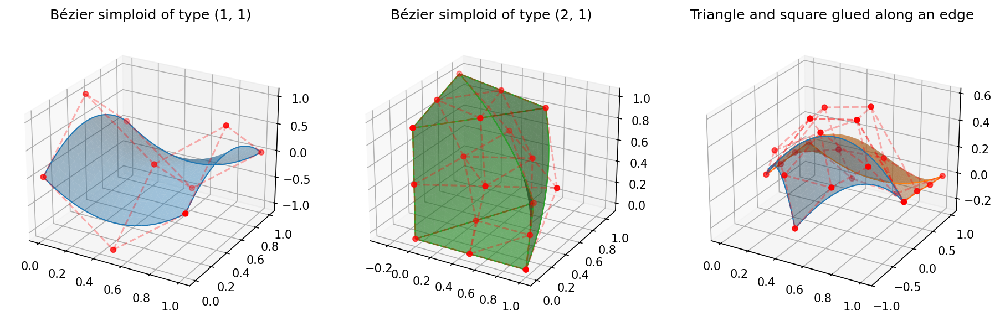

Simploidal Sets
A Bézier simplex has a single simplex as its parameter domain. Some data are
better described on a product of simplices — a prism (triangle ×
segment), a square (segment × segment) — or on several cells glued along
common faces. The torch_bsf.simploidal module implements the
simploidal sets of Peltier and Lienhardt [PL18], which describe exactly
such assemblies, together with the Bézier spaces they carry and their fitting.
Simploids and Bézier simploids
A simploid of type \((a_1, \ldots, a_n)\) is the cartesian product \(\Delta^{a_1} \times \cdots \times \Delta^{a_n}\) of simplices. A simplex is a simploid of type \((a)\), a cube one of type \((1, \ldots, 1)\), and a vertex one of type \(()\).
A Bézier simploid of type \((a_1, \ldots, a_n)\) and degree \((d_1, \ldots, d_n)\) is the tensor product of Bézier simplices:
where \(\Gamma^a_d\) is the set of multi-indices of length \(a + 1\)
summing to \(d\), and every \(\mathbf u^i\) lies on the standard
\(a_i\)-simplex. In torch_bsf the parameter of a simploid is the
concatenation \((\mathbf u^1, \ldots, \mathbf u^n)\) of the barycentric
coordinates of all factors, a vector of length \(\sum_i (a_i + 1)\).
A Bézier simploid of type \((a)\) is the Bézier simplex of degree
\(d_1\) with \(a + 1\) parameters.
BezierSimploid is a plain torch.nn.Module
holding the control points, and torch_bsf.fit() fits one to data, either
exactly by linear least squares (the default) or with a Lightning trainer
(solver="trainer"). Without simploid_type, torch_bsf.fit() fits a
Bézier simplex, i.e. a Bézier simploid of type \((M - 1)\) for \(M\)
parameters; pass the type to fit any other simploid:
import torch
from torch_bsf import fit
from torch_bsf.simploidal import sample_simploid
# Samples on a prism: (u0, u1, u2) on a triangle, (v0, v1) on a segment
t = sample_simploid((2, 1), 200, seed=0)
x = torch.cat([t[:, :3] * t[:, 3:4], t[:, 4:] ** 2], dim=1)
bs = fit(t, x, simploid_type=(2, 1), degree=2)
print(bs.simploid_type, bs.degree, bs.n_params, bs.n_values)
print(torch.allclose(bs(t), x, atol=1e-4))
(2, 1) (2, 2) 5 4
True
A Bézier simploid can also be restricted to a face, degenerated, or multiplied with another one (the Minkowski sum of the control points):
bottom = bs.face(1, 1) # the triangle at v = (1, 0)
pyramid_like = bs.degenerate(1, -1) # insert a degenerate edge: type (2, 1, 1)
product = bs.product(other) # type (2, 1) + type of other
Saving, loading and the command line
save() writes the control points of a Bézier
simploid to a .csv, .tsv, .json, .yml/.yaml or .pt
file, and load() reads them back:
import tempfile
from pathlib import Path
from torch_bsf.simploidal import load, save
with tempfile.TemporaryDirectory() as d:
save(Path(d) / "prism.csv", bs)
loaded = load(Path(d) / "prism.csv")
print(loaded.simploid_type, loaded.degree)
print(torch.allclose(loaded(t), bs(t), atol=1e-5))
(2, 1) (2, 2)
True
As for Bézier simplices (see Initial Control Points), the text formats map each index to its control point, but an index is now a tuple of multi-indices \((\boldsymbol\alpha^1, \ldots, \boldsymbol\alpha^n)\), one per factor:
"((2, 0, 0), (2, 0))",0.0,0.1
"((2, 0, 0), (1, 1))",1.0,1.1
...
The simploid type \((a_1, \ldots, a_n)\) and the degree are not stored
separately; load() infers them from the lengths
and the sums of the multi-indices, and checks that every control point is
present exactly once. A .pt file holds a dictionary of the type, the
degree and the control point tensor (and keeps its dtype), which is loaded
with torch.load(..., weights_only=True).
The command line interface fits a Bézier simploid instead of a Bézier simplex
when --simploid-type is given (or when --init is a Bézier simploid of
another type). The parameters file must then have \(\sum_i (a_i + 1)\)
columns, the barycentric coordinates of the factors side by side:
python -m torch_bsf \
--params=params.csv \
--values=values.csv \
--simploid-type=2,1 \
--degree=2
This calls torch_bsf.fit(), saves the control points to
params.csv,values.csv,control_points,t_2-1,d_2.csv (choose another path and
format with --save=model.json) and the predictions on --meshgrid
(default: the parameters) to params.csv,values.csv,meshgrid,t_2-1,d_2.csv.
The degree in these names is a single number when all factors share it, and
lists the degree of every factor otherwise (e.g. d_3-1). The options are
the same as for a Bézier simplex:
--simploid-type=A1,...,An— the type (default: the type of--init, else a Bézier simplex);--degreeapplies to every factor;--init=FILE— start from a model saved bysave()(e.g. by--save), taking its type and degree, instead of--degree;--freeze=INDICES— keep these control points of--initfixed, e.g.'[[[2,0,0],[2,0]]]'for the type2,1;--solver={lstsq,trainer}— solve the least-squares problem exactly (default) or train with the Lightning trainer options (--max_epochs,--batch_size,--accelerator, …), which are ignored otherwise;--ridge=W— the ridge penalty of thelstsqsolver (default: 0);--smoothness_weight=W— the smoothness penalty (default: 0);--split_ratio=R— fit to a random fractionRof the samples and report the error on the others (val_mse,val_mae);--seedfixes the split;--save=FILE— where to save the control points.
--normalize is applied during fitting and undone on the saved control
points, so the saved model predicts values in the original scale. The same is
available from the MLflow project:
mlflow run https://github.com/opthub-org/pytorch-bsf \
-P params=params.csv \
-P values=values.csv \
-P simploid_type=2,1 \
-P degree=2
Simploidal sets
A simploidal set is a set of simploids equipped with
face operators \(d^i_j\), mapping a simploid to the face obtained by removing vertex \(j\) of its \(i\)-th factor (the factor disappears when it was an edge), and
degeneracy operators \(s^i_j\), mapping a simploid to a degenerate simploid of one more dimension that has the same shape: \(s^i_j\) repeats vertex \(j\) of factor \(i\), and \(s^i_{-1}\) inserts a degenerate edge as a new factor.
These operators satisfy the commutation relations of Definition 1 in the paper. Degeneracies make it possible to represent, e.g., a square-based pyramid as a cube whose top face is collapsed into a vertex.
As simplicial sets are presheaves on the simplex category, simploidal sets are presheaves on a simploid category, and they form a topos; see The Category of Simploidal Sets for the definitions and proofs.
SimploidalSet stores only the non-degenerate
simploids; degenerate ones are kept in a canonical form (a base simploid plus
a degeneracy map), so that equal degenerate simploids are the same Python
object. It provides the basic construction operations of the paper:
Method |
Operation |
|---|---|
|
Add a complete cell with its whole boundary. |
|
Cartesian product of two simploidal sets (Algorithm 7). |
|
Identify two simploids of the same type; their boundaries are identified face by face,
|
|
Identify |
|
Cone with a new vertex (Algorithm 8): a simploid of type \((a_1, \ldots, a_k)\) becomes one of type \((a_1, \ldots, a_k, 1)\) whose far end is degenerated into the new vertex. |
|
Verify the face commutation relations. |
Note
Factor indices are 0-based in torch_bsf, whereas the paper uses 1-based ones:
face(i, j) is \(d^{i+1}_j\), degeneracy(i, j) with \(j \ge 0\) is \(s^{i+1}_j\),
and degeneracy(i, -1) is \(s^i_{-1}\).
The following builds the example of Figure 1(c) of the paper, a tetrahedron and a cube connected by a prism, and adds a pyramid on top of the cube:
from torch_bsf.simploidal import SimploidalSet
S = SimploidalSet()
tetra = S.add_simplex(3)
prism = S.add_simploid((2, 1))
cube = S.add_simploid((1, 1, 1))
# Glue a triangle of the tetrahedron to an end of the prism,
# and a square side of the prism to a face of the cube.
S.identify(tetra.face(0, 0), prism.face(1, 0))
S.identify(prism.face(0, 0), cube.face(0, 0))
# Cone the opposite face of the cube: a square-based pyramid.
apex, cones = S.cone([cube.face(0, 1)])
pyramid = cones[cube.face(0, 1)]
S.check()
print([s.simploid_type for s in S.main_simploids()])
print(pyramid.face(2, 0).is_degenerate, pyramid.face(2, 0).base is apex)
[(3,), (2, 1), (1, 1, 1), (1, 1, 1)]
True True
Homology
The topology of a simploidal set can be checked after it is built by computing its homology (Section 4.4 of Peltier and Lienhardt [PL18]). The chain group \(C_k\) is spanned by the non-degenerate simploids of dimension \(k\), and the boundary of a simploid \(\sigma\) of type \((a_1, \ldots, a_n)\) follows the sign rule of a product of simplices:
where the terms whose face \(d^i_j \sigma\) is degenerate are dropped.
boundary_matrix()returns the integer matrix of \(\partial_k\), with rowssimploids(k - 1)and columnssimploids(k); it satisfiesboundary_matrix(k) @ boundary_matrix(k + 1) == 0.betti_numbers()returns the Betti numbers \(\beta_0, \ldots, \beta_{\dim}\), the ranks of the homology groups. The ranks are computed exactly by integer elimination, over the rationals (field="Q", default) or over \(\mathbb Z / 2\) (field="Z2"); the two differ only for spaces whose integral homology has torsion, such as non-orientable surfaces.
from torch_bsf.simploidal import SimploidalSet
# A torus: a square whose opposite edges are identified
torus = SimploidalSet()
square = torus.add_simploid((1, 1))
torus.identify(square.face(0, 0), square.face(0, 1))
torus.identify(square.face(1, 0), square.face(1, 1))
print(torus.betti_numbers())
# A sphere: a square whose two edges face(1, *) are collapsed into
# vertices and whose two other edges are identified
sphere = SimploidalSet()
square = sphere.add_simploid((1, 1))
for j in range(2):
edge = square.face(1, j)
sphere.degenerate(edge, edge.face(0, 0), 0, -1)
sphere.identify(square.face(0, 0), square.face(0, 1))
print(sphere.betti_numbers())
# A projective plane: two triangles glued along their edges
rp2 = SimploidalSet()
t1, t2 = rp2.add_simplex(2), rp2.add_simplex(2)
rp2.identify(t1.face(0, 0), t2.face(0, 0))
rp2.identify(t1.face(0, 1), t2.face(0, 2))
rp2.identify(t1.face(0, 2), t2.face(0, 1))
print(rp2.betti_numbers(), rp2.betti_numbers(field="Z2"))
[1, 2, 1]
[1, 0, 1]
[1, 0, 0] [1, 1, 1]
Simploidal Bézier spaces
SimploidalBezierSpace associates a Bézier
simploid with every simploid of a simploidal set; by default all factors have
a common degree \(d \ge 1\), as in the paper. Following Section 4.3 of the
paper, every non-degenerate simploid stores only its proper control points
— those whose multi-indices have no zero component, i.e.
\(\prod_i \binom{d_i - 1}{a_i}\) points for degrees \((d_1, \ldots, d_n)\),
and one point for a vertex. The control net of any simploid is rebuilt from its
proper points and the points of its faces (Property 2-1), and the control net
of a degenerate simploid from the one of its base (Property 2-2).
Consequently:
every control point is stored exactly once;
simploids sharing a face share the control points of that face, so the space is continuous across shared faces by construction;
a degenerate face (such as the apex face of a pyramid) has the shape of its base (the apex vertex).
Per-factor degrees
When the data varies very differently along different directions — say, a
prism that is linear across its triangles but cubic along its height — raising
every direction to the highest degree adds many control points and invites
over-fitting. Instead of an integer, degree can be a mapping from
non-degenerate simploids to their degrees: an integer for all their factors, or
one degree per factor.
The degrees must be consistent so that shared faces keep a single control net:
a factor of a simploid and the corresponding factor of each of its faces have
the same degree. Equivalently, each factor of a simploid has the degree of its
edges in the direction of that factor. The given degrees propagate through
shared faces, the factors still undetermined get default_degree, and an
inconsistent mapping raises ValueError. Edge factors inserted by a
degeneracy \(s^i_{-1}\) impose no constraint, since a degenerate Bézier
simploid is constant along them; simploid_degree reports them with the
maximum degree of the space (its degree attribute).
import torch
from torch_bsf.simploidal import SimploidalSet, SimploidalBezierSpace, sample_simploid
# A prism glued to a cube along a square face
S = SimploidalSet()
prism = S.add_simploid((2, 1))
cube = S.add_simploid((1, 1, 1))
S.identify(prism.face(0, 0), cube.face(0, 0))
# Linear across the triangles, cubic along the height; the cube inherits
# these degrees on the shared face and gets the default on its last factor.
space = SimploidalBezierSpace(S, {prism: (1, 3)}, n_values=1, default_degree=2)
print(space.simploid_degree(prism), space.simploid_degree(cube))
# Inconsistent degrees on the shared face are rejected
try:
SimploidalBezierSpace(S, {prism: (1, 3), cube: (2, 2, 3)}, n_values=1)
except ValueError:
print("inconsistent")
(1, 3) (2, 1, 3)
inconsistent
Fitting
fit_simploidal_set() fits a simploidal Bézier
space to samples attached to any non-degenerate simploids, each given in the
parameters of its simploid. The proper control points minimize the total
squared error
where \(B_\sigma\) is the Bézier simploid of \(\sigma\) and
\(\lambda\) is the optional ridge weight. Because the problem is
linear in the proper control points, the default solver "lstsq" solves it
exactly (the minimum-norm solution when it is under-determined and
ridge=0). solver="trainer" trains the space with
lightning.pytorch.Trainer instead, forwarding the extra keyword
arguments to it; this is useful for very large data sets.
import torch
from torch_bsf.simploidal import SimploidalSet, fit_simploidal_set, sample_simploid
# A triangle and a square sharing an edge
S = SimploidalSet()
tri = S.add_simplex(2)
sq = S.add_simploid((1, 1))
S.identify(tri.face(0, 2), sq.face(1, 1))
# Noisy samples of two unrelated functions on the two cells
torch.manual_seed(0)
t1 = sample_simploid((2,), 100, seed=0)
t2 = sample_simploid((1, 1), 100, seed=1)
x1 = torch.sin(3 * t1[:, :1]) + 0.01 * torch.randn(100, 1)
x2 = t2[:, 2:3] ** 2 + 0.01 * torch.randn(100, 1)
space = fit_simploidal_set(S, [(tri, t1, x1), (sq, t2, x2)], degree=3)
# The two pieces agree on the shared edge
w = sample_simploid((1,), 10, seed=2)
on_tri = torch.cat([w, torch.zeros(10, 1)], dim=1)
on_sq = torch.cat([w, torch.tensor([[1.0, 0.0]]).expand(10, 2)], dim=1)
print(torch.allclose(space.evaluate(tri, on_tri), space.evaluate(sq, on_sq), atol=1e-6))
True
Useful methods of a fitted space:
evaluate(simploid, t)— evaluate the Bézier simploid of any simploid;simploid_degree(simploid)— the degree of each factor of any simploid;forward(t, simploid_ids)— evaluate a batch mixing several simploids (parameters padded to a common width; ids fromsimploid_id);control_points(simploid)— the full control net of any simploid;bezier_simploid(simploid)— a standaloneBezierSimploidcopy, e.g. for further processing.
Visualization
plot_bezier_simploid() and
plot_simploidal_bezier_space() draw Bézier simploids
and simploidal Bézier spaces with 2 or 3 values (they require matplotlib).
Curves are drawn as lines, triangles and squares as triangulated surfaces with
their boundary curves, and simploids of dimension 3 or more through their
2-dimensional faces. The control net — the control points and the segments
joining the control points whose indices differ by \(e_k - e_l\) in one
factor — is shown unless show_control_points=False. Every piece of a space
is drawn in its own color, so that the pieces can be seen to meet on their
shared faces.
import matplotlib.pyplot as plt
import torch
from torch_bsf.plotting import plot_bezier_simploid, plot_simploidal_bezier_space
from torch_bsf.simploidal import BezierSimploid, SimploidalBezierSpace, SimploidalSet
# A random Bézier simploid of type (2, 1) (a prism) with 3 values
prism = BezierSimploid.randn((2, 1), degree=2, n_values=3)
# A random space on a triangle and a square sharing an edge, with 3 values
S = SimploidalSet()
tri, sq = S.add_simplex(2), S.add_simploid((1, 1))
S.identify(tri.face(0, 2), sq.face(1, 1))
space = SimploidalBezierSpace(S, degree=3, n_values=3)
torch.nn.init.normal_(space.proper_control_points)
fig = plt.figure(figsize=(10, 5))
ax = fig.add_subplot(1, 2, 1, projection="3d")
plot_bezier_simploid(prism, ax=ax)
ax = fig.add_subplot(1, 2, 2, projection="3d")
plot_simploidal_bezier_space(space, ax=ax)
plt.show()
examples/generate_simploidal_plot.py produces the figure below from fitted
models in the same way.


Fig. 13 Left – A Bézier simploid of type \((1, 1)\) with its control net.
Middle – A Bézier simploid of type \((2, 1)\), drawn through its two
triangles and three squares.
Right – A simploidal Bézier space of degree 3 made of a triangle (blue)
and a square (orange) sharing an edge, fitted to samples of a surface.
Generated by examples/generate_simploidal_plot.py.
Limitations
Per-factor degrees must agree exactly on shared faces. Pieces of different degrees on a shared face are not reconciled by degree elevation (which would store the face at the lower degree and constrain the higher-degree piece to its elevation); give the shared factors the higher degree instead.
Degrees are chosen by the user; they are not selected automatically.
A space captures the structure of its simploidal set when it is created; build the set completely before creating or fitting a space.
After
identify(), references to simploids that were merged away are stale; use the returned simploid or the faces of the surviving simploids.